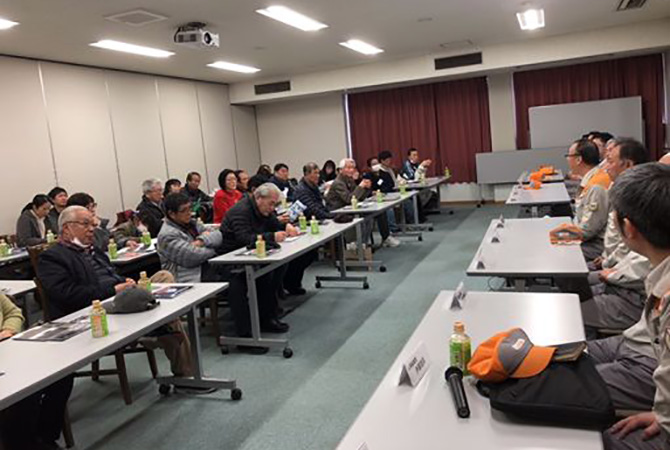
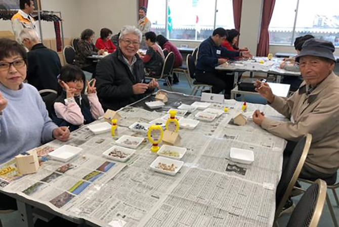

国内の工場や営業拠点で開催している、地域住民の皆さまと対話する「コミュニティ・ダイアログ」。地域環境や防災、学校・教育、交通、自治会関係など幅広い分野の課題についての意見交換を通じて、LIXILが地域にどのように貢献できるかを考え、活動に反映しています。
2019年3月期も地域の多様なステークホルダーの方々に参加いただき、各地でさまざまなテーマのコミュニティ・ダイアログを実施しました。一例として、愛知県常滑市でのダイアログの様子をご紹介します。
古くから焼き物の街として発展してきた常滑市で、衛生陶器を製造する榎戸（えのきど）工場。原料の粉砕や型づくりから衛生陶器を焼き上げるまでの製造を一貫して行っており、年間数千人の工場見学を受け入れています。
榎戸工場でのコミュニティ・ダイアログは、2013年に市や自治会、小中学校からの参加者を招いて初めて開催しました。以降、市や学校とは個別に関係性を、自治会の皆さまとは毎年ダイアログの場を継続して持っています。
| 日時 | 2019年2月11日 |
|---|---|
| 開催場所 | LIXIL榎戸工場 |
| 社外ステークホルダー | 榎戸区自治会役員（区長、副区長、参与）含む35名 |
| LIXIL榎戸工場からの参加者 | 工場長、人事総務課長、各課の課長含む14名 |
※所属・役職名は、ダイアログ開催当時の名称です。
１．工場見学
２．ワークショップ「タイルを使った木のおうち貯金箱作り」
３．対話「LIXILへの意見・要望、防災の取り組みについて」
工場見学に続いて、参加者の皆さまには、カラフルな常滑産のタイルを使った「木のおうち貯金箱づくり」を体験いただきました。タイル生産で発展し、「INAX ライブミュージアム 世界のタイル博物館」がある常滑市ならではの企画として、好評でした。
参加者：日本各地で災害が相次いていますが、南海トラフ地震への対応策や災害関連商品などはありますか？
LIXIL：南海トラフ地震への備えとしては、災害時のシミュレーションを工場全体で行っています。また、自衛消防組織を設置し、万一の際の消火活動や救護活動を行えるよう訓練や連絡網の整備を行っています。
LIXILはトイレの技術をどのように社会に役立てるかを常に追求しており、今年、災害配慮トイレ「レジリエンストイレ」を発売します。過去の災害では多くの避難所でトイレが問題になってきました。このトイレは災害時に通常の５L に対し１L という少量での洗浄に切り替えられる設計になっています。
参加者：工場見学を通じて、トイレが身近になりました。ところで、タンクレストイレの「サティス」とは、どういう意味でしょうか。
LIXIL：サティスは、「サティスファクション（満足）」から来ています。汚れがつかず、におわず、より美しく快適なトイレ空間を実現し、本物の満足を実感できるトイレを届けたいというコンセプトのもと、開発しました。
参加者：残業の有無や障害のある人の雇用など、工場で働いている皆さんの現状を教えてください。
LIXIL：連続有給休暇、時間単位休暇制度の導入など、個々の状況に応じた働き方ができるよう、社をあげて働き方改革を実践しています。また、身体に障害のある従業員は工場全体の６％ほどで、それぞれの能力や特性に応じた仕事ができるような職場環境づくりに努めています。
以前は工場の騒音などに関するご意見をいただくことが多かったのですが、最近では「一緒にやろう」と前向きな提案や要望をお聞きすることが増えました。参加してくださる方の人数も当初から倍増しています。これもダイアログや工場見学を継続的に行い、地域社会の皆さまとの対話を重ねてきた結果と考えています。住宅街のなかにある工場として、これからも地域の皆さんとのつながりを大切にしていきます。